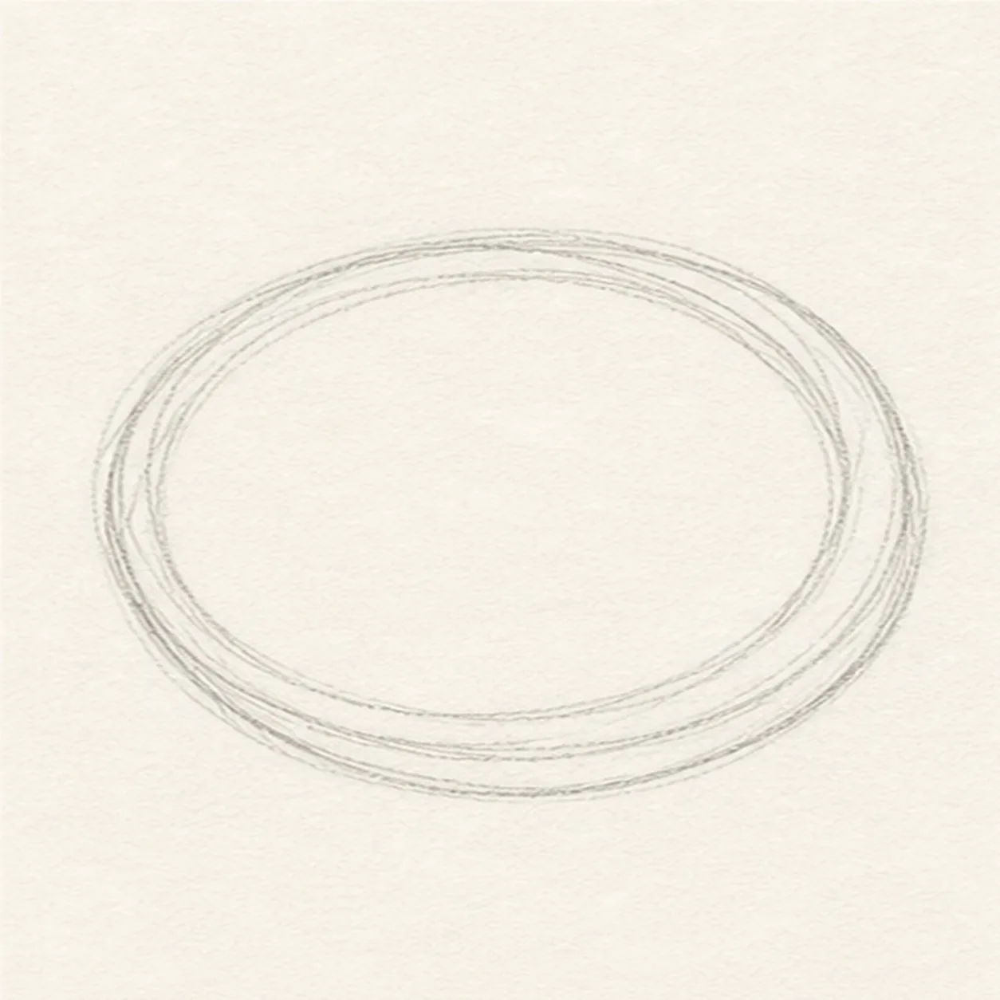
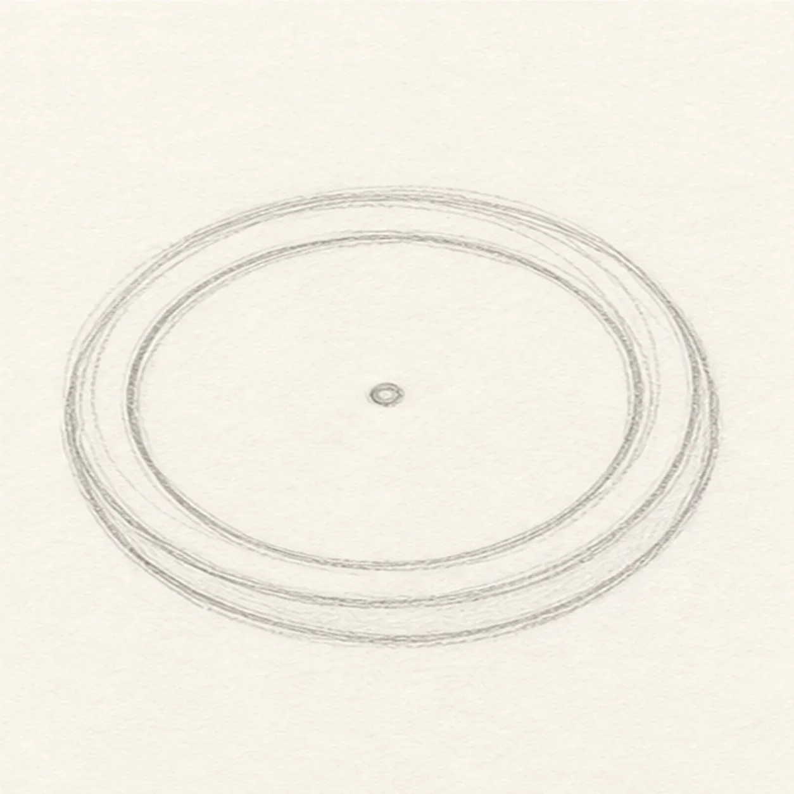
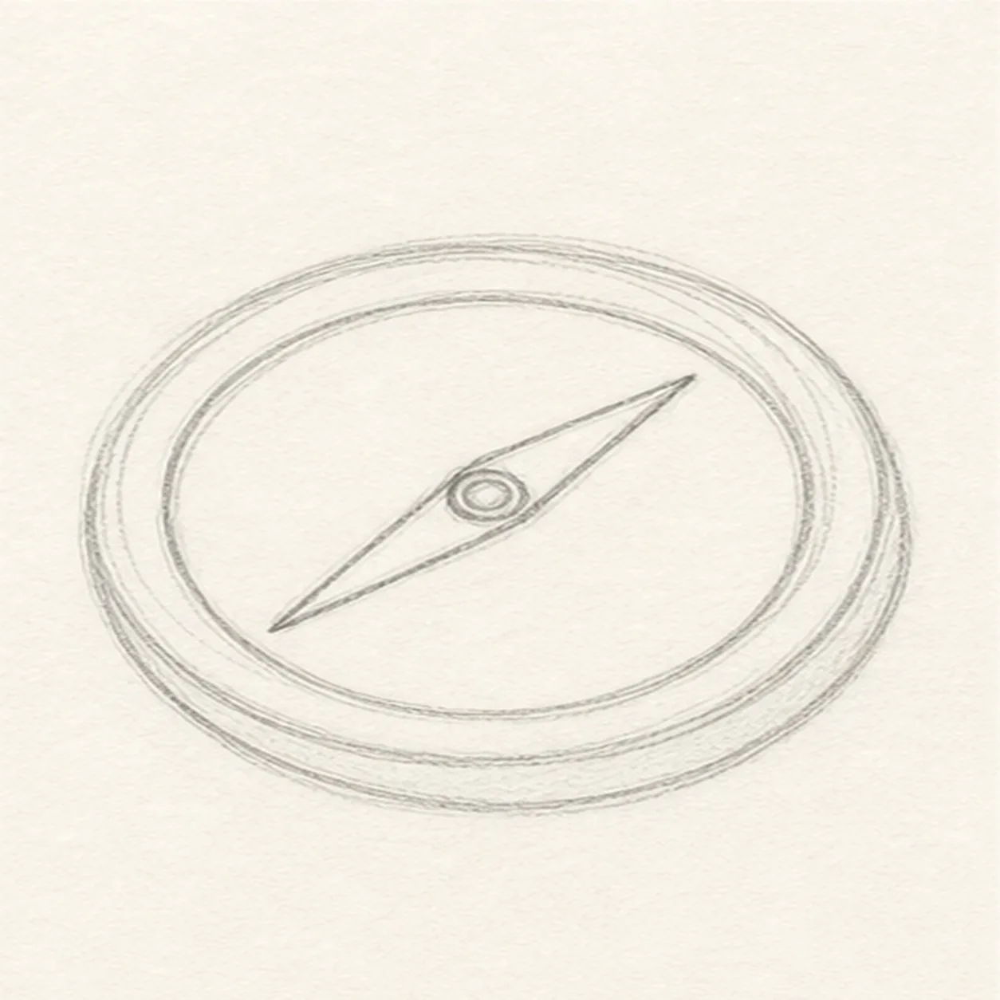
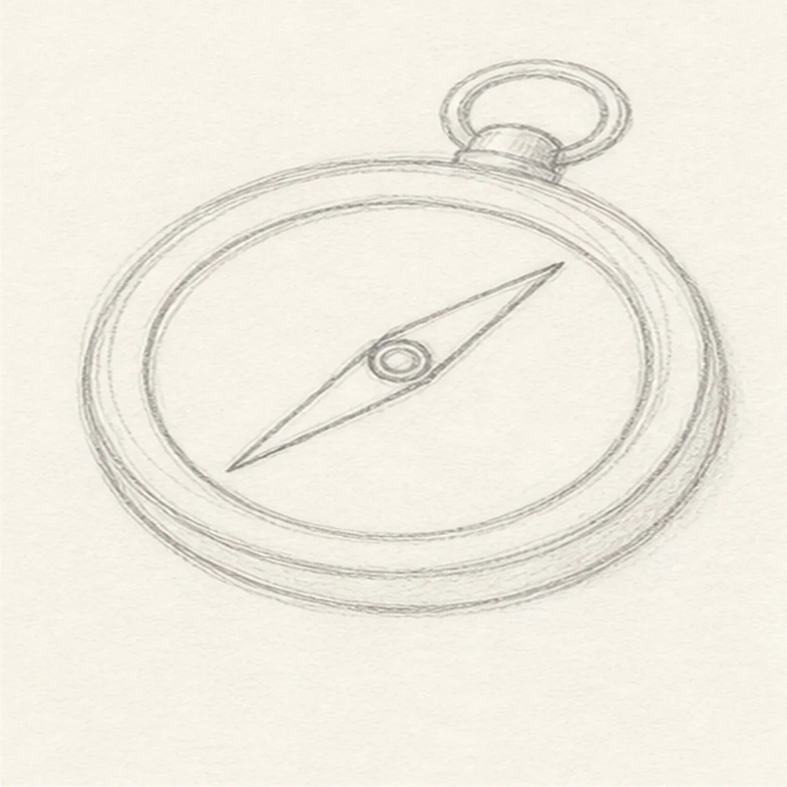
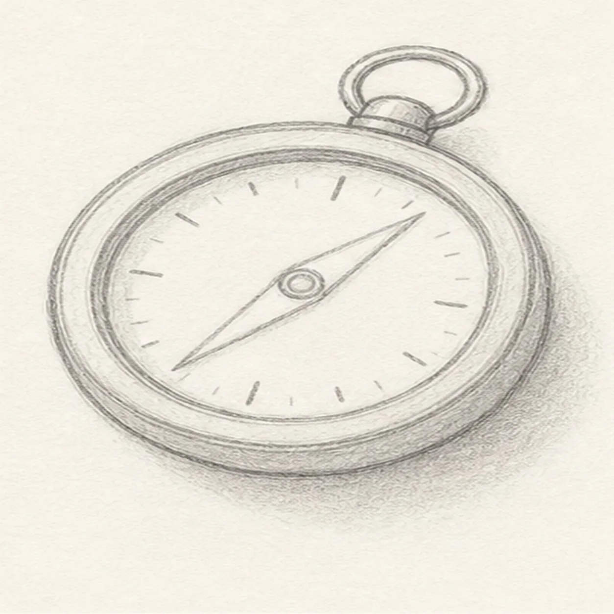

From the archive
Let's draw a pocket compass
Treat this as one small practice round: build the subject lightly, notice the shapes, then darken only the lines that help the finished sketch.
-
01

Start the round case
Draw a loose circle for the compass case, then echo it with a second light circle just inside the edge.
Sketch tip: Turn the paper as you draw. Small sketchy passes make a round object easier than one hard outline.
-
02

Add the face circle
Place a smaller circle inside the case and mark a tiny center point for the needle.
Sketch tip: Keep the face circle centered. The compass will feel sturdy even if the outer case is a little wobbly.
-
03

Set the needle
Draw a long diamond needle through the center, with one point reaching up and one point reaching down.
Sketch tip: Use the center point as a hinge. Both needle halves should feel connected, not like two separate triangles.
-
04

Attach the top loop
Add a small hinge cap and round hanging loop at the top of the case.
Sketch tip: Let the loop overlap the case slightly. That overlap makes it look attached instead of floating.
-
05

Mark ticks and shadow
Add short tick marks around the face, then shade the case edge and the cast shadow lightly.
Sketch tip: Skip letters and numbers. A few ticks are enough to make the object read as a compass.
-
06
Finish the compass
Darken the keeper contours, clarify the needle and tick marks, and strengthen the graphite shadow under the case.
Sketch tip: Save your darkest pencil pressure for the case rim and needle. The face should stay clean and readable.